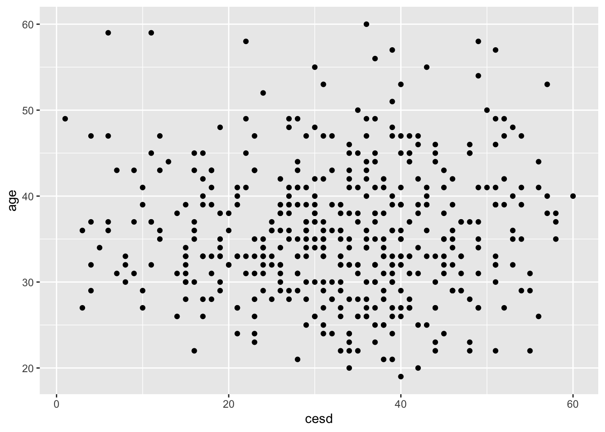

Problem 3 (Medium): Use routines from the purrr package and the HELPrct data frame from the mosaicData package to fit a regression model predicting cesd as a function of age separately for each of the levels of the substance variable. Generate a formatted table (with suitable caption) of results (estimates and confidence intervals) for the slope parameter for each level of the grouping variable.
(Hint: Use group_by() and group_modify() to fit the regression model on each part. Note that broom::tidy() is useful in having the output of the model be a data frame.)
The likelyhood someone uses a substance increates with age.
substance
term
estimate
CI_low
CI_high
alcohol
age
0.3
0.1
0.6
cocaine
age
-0.3
-0.6
0.0
heroin
age
-0.2
-0.5
0.0
Activity 2
Make a function that takes a df and a variable then produces a scatter plot of that variable vs cesd. Use it to plot multiple graphs of the first 6 numeric variables HELPrct. Hint: check out the extended example from 7.7
Warning: `aes_string()` was deprecated in ggplot2 3.0.0.
ℹ Please use tidy evaluation idioms with `aes()`.
ℹ See also `vignette("ggplot2-in-packages")` for more information.
Warning: Removed 207 rows containing missing values or values outside the scale range
(`geom_point()`).

library(tidyverse)library(mosaicData)my_func <-function(data,variable2){ my_plot <- data |>ggplot(aes(x = cesd, y = {{variable2}}))+geom_point()}my_func(HELPrct, age)
library(NHANES)bmi_plot <-function(.data, x_var) {ggplot(.data, aes(y = BMI)) +aes_string(x = x_var) +geom_jitter(alpha =0.3) +geom_smooth() +labs(title =paste("BMI by", x_var),subtitle ="NHANES",caption ="US National Center for Health Statistics (NCHS)" )}bmi_plot(NHANES, "Age")
`geom_smooth()` using method = 'gam' and formula = 'y ~ s(x, bs = "cs")'
Warning: Removed 366 rows containing non-finite outside the scale range
(`stat_smooth()`).
Warning: Removed 366 rows containing missing values or values outside the scale range
(`geom_point()`).
`geom_smooth()` using method = 'gam' and formula = 'y ~ s(x, bs = "cs")'
Warning: Removed 366 rows containing non-finite outside the scale range
(`stat_smooth()`).
Removed 366 rows containing missing values or values outside the scale range
(`geom_point()`).
`geom_smooth()` using method = 'gam' and formula = 'y ~ s(x, bs = "cs")'
Warning: Removed 1148 rows containing non-finite outside the scale range
(`stat_smooth()`).
Warning: Removed 1148 rows containing missing values or values outside the scale range
(`geom_point()`).
`geom_smooth()` using method = 'gam' and formula = 'y ~ s(x, bs = "cs")'
Warning: Removed 5442 rows containing non-finite outside the scale range
(`stat_smooth()`).
Warning: Failed to fit group -1.
Caused by error in `smooth.construct.cr.smooth.spec()`:
! x has insufficient unique values to support 10 knots: reduce k.
Warning: Removed 5442 rows containing missing values or values outside the scale range
(`geom_point()`).
`geom_smooth()` using method = 'gam' and formula = 'y ~ s(x, bs = "cs")'
Warning: Removed 366 rows containing non-finite outside the scale range
(`stat_smooth()`).
Warning: Removed 366 rows containing missing values or values outside the scale range
(`geom_point()`).
`geom_smooth()` using method = 'gam' and formula = 'y ~ s(x, bs = "cs")'
Warning: Removed 5113 rows containing non-finite outside the scale range
(`stat_smooth()`).
Warning: Removed 5113 rows containing missing values or values outside the scale range
(`geom_point()`).
`geom_smooth()` using method = 'gam' and formula = 'y ~ s(x, bs = "cs")'
Warning: Removed 1502 rows containing non-finite outside the scale range
(`stat_smooth()`).
Warning: Removed 1502 rows containing missing values or values outside the scale range
(`geom_point()`).